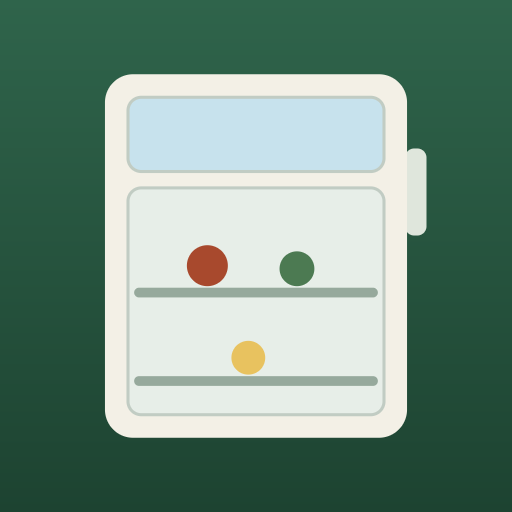
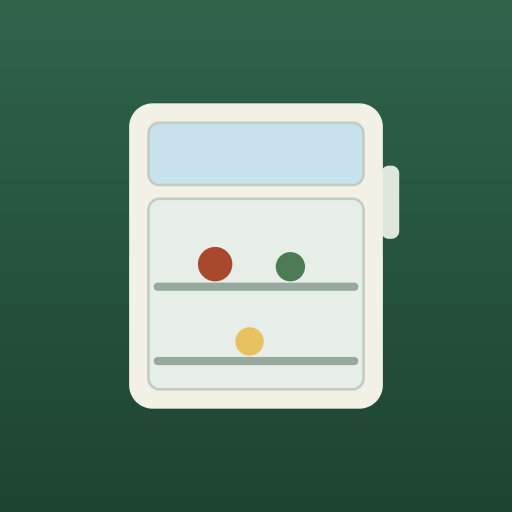

node scripts/build-icons.mjs が書き出した実ファイルを並べている。 絵を直すときは scripts/build-icons.mjs を編集して書き出し直す。 iOSは角を自分で丸め、Androidは中央の円だけを安全域として扱うため、 それぞれのマスクをかけた状態も出している。
node scripts/build-icons.mjs
scripts/build-icons.mjs

